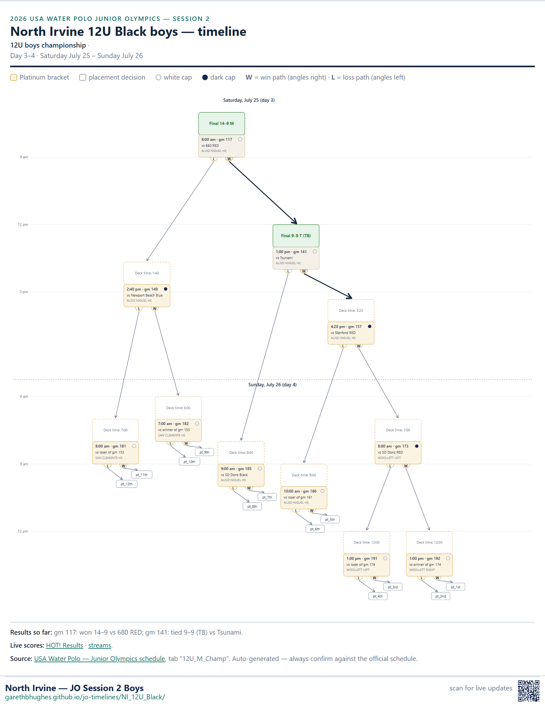

12U boys championship · in platinum pool P
Last verified against the master schedule at Friday July 24, 3:12 PM
Next game
vs Greenwich Blue
When
Friday July 24 · 2:30 pm
Deck
1:30
Where
PORTOLA HS 2
Caps
dark caps
Game
#98
Scouting report: Greenwich Blue (seed 21) is 3–0 in this session so far — beat Santa Cruz 20–2; beat San Jose Express 16–7; beat Cc United Black 13–8. They're averaging 16.3 goals for and 5.7 against. Common opponent Cc United Black: you won 16–15, they won 13–8.

Change log
Game 66 score updated (vs CC United Black).
Game 98 set: vs Greenwich Blue, 2:30 pm at PORTOLA HS 2.
Game 10 score updated (vs Topaz Tsunami).
Game 34 time changed to 2:00 pm (vs winner of gm 14).
Game 66 score updated (vs platinum pool P).
Game 67 score updated (vs gold pool R).
Game 10 score updated (vs Topaz Tsunami).
Game 69 score updated (vs platinum pool S).
Game 72 score updated (vs gold pool O).
Game 73 score updated (vs platinum pool R).
Game 76 score updated (vs gold pool P).
Game 34 score updated (vs winner of gm 14).
Game 38 score updated (vs loser of gm 14).
Game 98 set: vs platinum pool P, 2:30 pm at PORTOLA HS 2.
Game 99 set: vs gold pool R, 2:30 pm at MISSION VIEJO HS.
Game 101 set: vs platinum pool S, 3:20 pm at ALISO NIGUEL HS.
Game 104 set: vs gold pool O, 3:20 pm at LAGUNA HILLS HS.
Game 105 set: vs platinum pool R, 4:10 pm at ALISO NIGUEL HS.
Game 108 set: vs gold pool P, 4:10 pm at LAGUNA HILLS HS.
Game 54 score updated (vs loser of gm 42).
Game 58 score updated (vs winner of gm 46).
Results so far: gm 66: won 16–15 vs CC United Black.